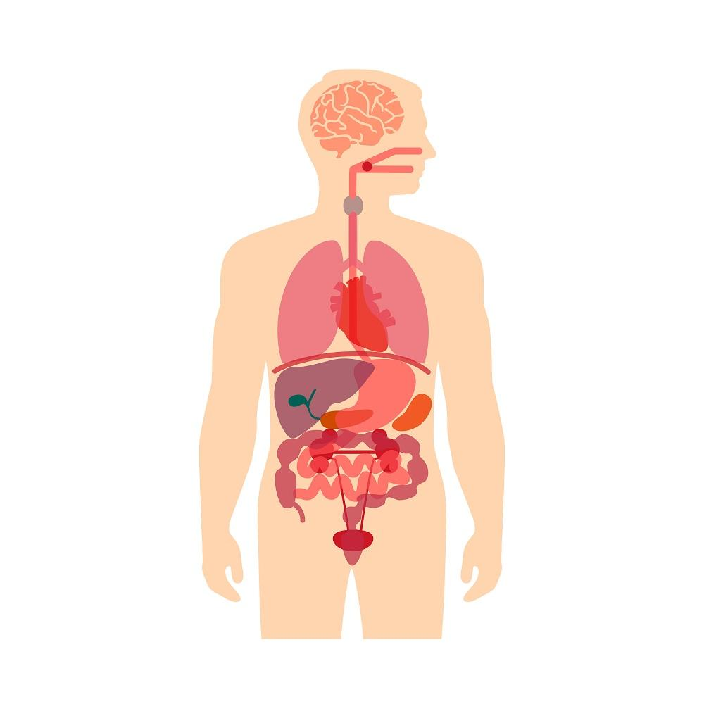

Enfermedades del cuerpo humano
| Enfermedad | Descripción | Síntomas | Tratamiento |
|---|---|---|---|
| Diabetes Mellitus Tipo 2 | Trastorno metabólico que afecta la forma en que el cuerpo procesa la glucosa. | Sed excesiva, fatiga, visión borrosa, micción frecuente. | Medicación, dieta, ejercicio. |
| Hipertensión Arterial | Elevación constante de la presión arterial que puede llevar a complicaciones cardíacas y renales. | Dolor de cabeza, mareos, sangrado nasal ocasional. | Medicación, cambios en el estilo de vida. |
| Asma | Enfermedad inflamatoria crónica de las vías respiratorias que causa dificultad para respirar. | Tos, sibilancias, falta de aire. | Inhaladores, esteroides, control ambiental. |
| Artritis Reumatoide | Enfermedad autoinmune que causa inflamación y dolor en las articulaciones. | Dolor articular, rigidez matutina, fatiga. | Antiinflamatorios, fisioterapia, cirugía. |
| Migraña | Cefalea intensa, a menudo acompañada de sensibilidad a la luz y el sonido. | Dolor de cabeza pulsátil, náuseas, visión borrosa. | Analgésicos, terapias preventivas. |
Imagen interactiva del cuerpo humano
Pulse en los órganos para ver sus enfermedades relacionadas.
